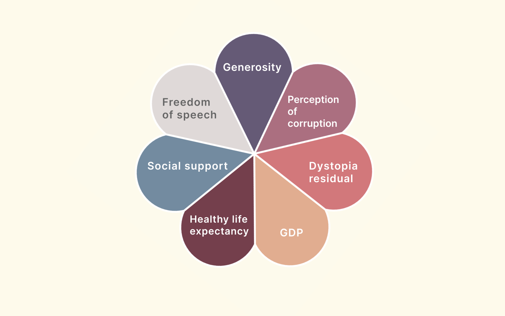

Data Visualization with Constraints

Project info |
|
|---|---|
| Type: Semester project - Execution time 2 months Course: Generative design Faculty: HfG Schwäbisch Gmünd Year: 2020 |
Take a closer look at my data design project here!
Interaction
Single click - change the view
Double click - next view
Scroll - zoom in/out
Working with constraints - In this project, the constraints were to design and code a data visualization without using any alphanumeric characters (text, numbers) or pictorial elements. The difficulty was to figure out an encoding for the different categories that were to compare.
About the project - The World Happiness Report of the United Nations attempts to evaluate the well-being of 150 countries worldwide on the basis of a number of key factors such as social environment, health, GDP, etc. The report is based on a survey whose results were subsequently evaluated.
Each country is represented by a flower, each category by a petal. The size of the petal indicates the score of the respective country in this category (e.g. GDP in Germany). When all points are added up, the country’s total score (ladder score) is obtained. The higher the score, the larger the flower.

Color-code
Worldmap - The bigger the flower, the happier the nation. Zoom in to have a closer look at the individual categories.

Scatter plot - Here, you can see the relationship between the categories of the World Happiness Report and the ladder score (happiness score). The particular background color indicates the category that is currently visible. Thus, it can be observed how strong the influence of the particular category is on the happiness score. The stronger the influence, the denser the diagonal. A simple click takes you to the next category.

Golden thread - The aim of this chart is to display which country has improved or worsened in the last 5 years. Unhappy countries show a higher volatility than happy countries. X-axis: years, y-axis: happiness.